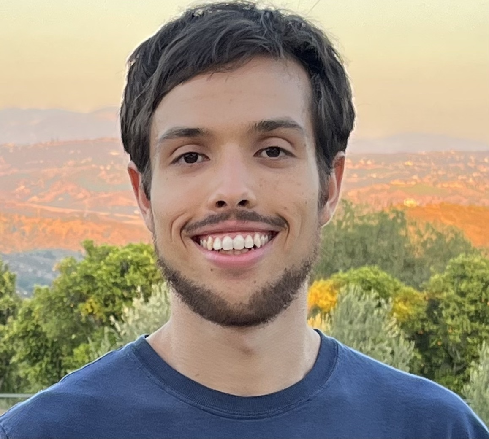

+1(760) 215-3557
acaru004@ucr.edu
adcaruso110@gmail.com
Linkedin Account Github RespositoryUniversity of California, Riverside - Physics
September 2019 - June 2023
Currently pursuing a Physics Bachelor's of Science Degree, standard track
Winter 2020 - Winter 2021
WInter 2021 - Present
Srping 2017 - Summer 2017
Dean's Honors List for Winter 2020
Dean's Honors List for Fall 2020
R. Stephen White Endowment Award - Outstanding 3rd year Undergraduate Student for Winter 2022
Experience with programming languages: C++, UNIX, Latex and JSON; text editors: Emacs and VIM; and softwares: Wolfram Mathematica and ROOT from CERN.
I am primarily intrigued by quantum mechanics and particle physics. An upcoming summer 2022 CERN Internship in Europe will provide experience in those fields, along with possible research involving kaon decays. I am particularly interested in neutrinos and other fundamental and composite particles (hadrons).